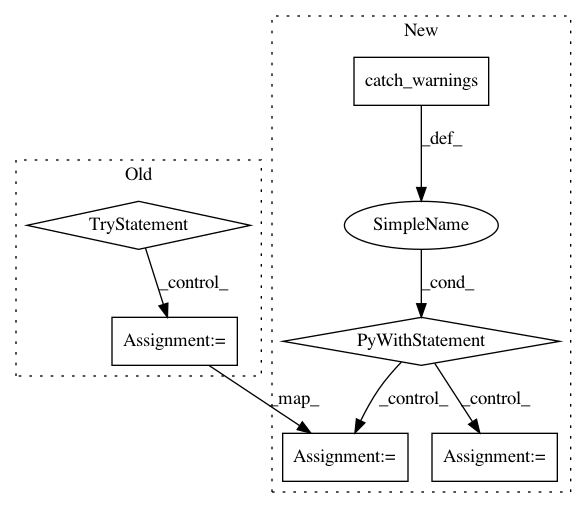

80d32c6793323bb1a1c0bb55faef8f9b5d30f62a,chemml/chem/magpie_python/vassal/geometry/Line.py,Line,distance,#Line#Any#Any#,178
Before Change
if l is None:
d = p - self.zero
n = np.zeros(3)
try:
n = d - np.dot(d, self.direction) * self.direction
except RuntimeWarning:
print(d, self.direction)
return norm(n)
else:
normal = np.cross(self.direction, l.direction)
n = norm(normal)
After Change
// except RuntimeWarning:
// print(d, self.direction)
// return norm(n)
with warnings.catch_warnings(record=True) as w:
// Cause all warnings to always be triggered.
warnings.simplefilter("always")
n = d - np.dot(d, self.direction) * self.direction
// print(n, norm(n))
if len(w) > 0 and issubclass(w[-1].category, RuntimeWarning):
// Todo: check w/ Ram if this is what he meant to do when catch a warning: n = np.zeros(3)
// n = np.zeros(3)
// print(d, self.direction)
pass
return norm(n)
else:
normal = np.cross(self.direction, l.direction)
n = norm(normal)
if n < sys.float_info.min:
In pattern: SUPERPATTERN
Frequency: 4
Non-data size: 6
Instances
Project Name: hachmannlab/chemml
Commit Name: 80d32c6793323bb1a1c0bb55faef8f9b5d30f62a
Time: 2018-10-02
Author: mojtabah@buffalo.edu
File Name: chemml/chem/magpie_python/vassal/geometry/Line.py
Class Name: Line
Method Name: distance
Project Name: scipy/scipy
Commit Name: 2b9b1d91e822b1ca649fd4e01c9c5c402246b7f3
Time: 2014-11-03
Author: evgeni@burovski.me
File Name: scipy/stats/tests/test_stats.py
Class Name: TestNanFunc
Method Name: test_nanmean_all
Project Name: eth-cscs/reframe
Commit Name: 1836156fd8b116dd140e018c1653563b1d4925fb
Time: 2021-02-23
Author: karakasis@cscs.ch
File Name: unittests/test_fields.py
Class Name:
Method Name: test_deprecated_field
Project Name: scipy/scipy
Commit Name: 2b9b1d91e822b1ca649fd4e01c9c5c402246b7f3
Time: 2014-11-03
Author: evgeni@burovski.me
File Name: scipy/stats/tests/test_stats.py
Class Name: TestNanFunc
Method Name: test_nanstd_all